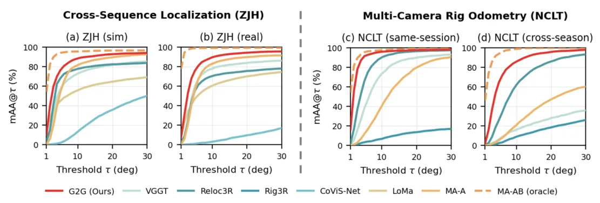
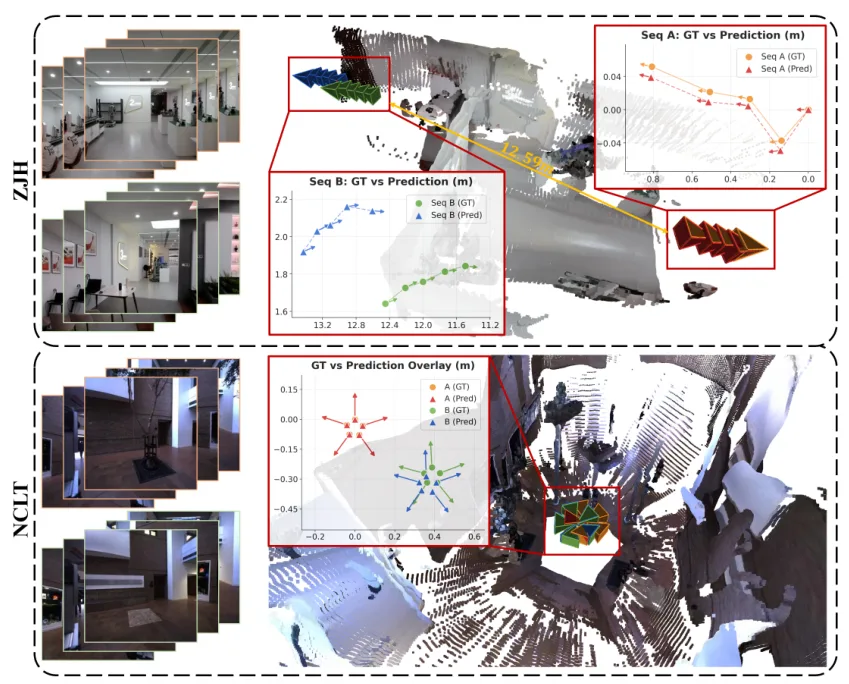
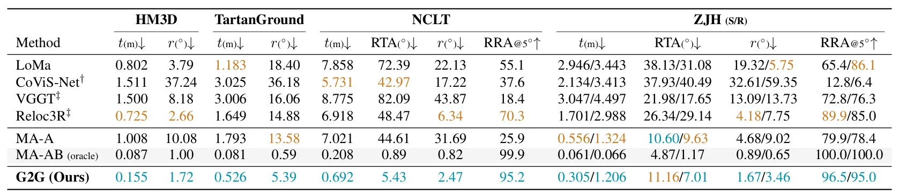
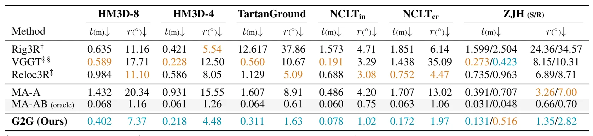
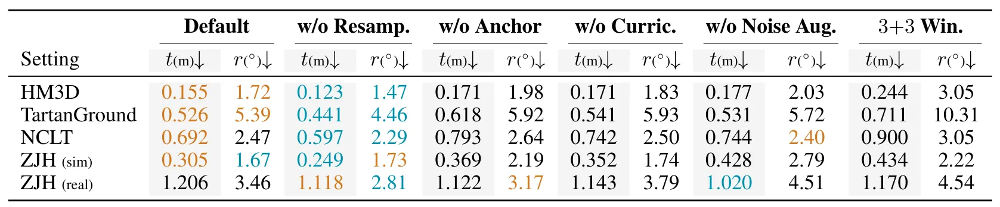

G2G：利用组内几何进行组间位姿估计G2G: Exploiting Intra-Group Geometry for Inter-Group Pose Estimation
直接面向跨序列重定位和多相机 rig odometry，代码已公布；评分受采集 score 较低和需要复现验证影响。
一句话工作总结
G2G 冻结多视图 foundation model，用轻量跨组桥接模块显式估计两组图像的相对位姿。
摘要
恢复两组图像之间的相对 6-DoF 位姿是跨序列重定位和多相机 rig 里程计的基础。每个图像组通常携带来自视觉里程计或 rig 标定的已知组内几何，预训练多视图 backbone 也已能把这类几何融合进视觉特征；但当前模型常把所有视图当作无结构集合，缺少跨组推理。G2G 冻结 foundation model，仅增加三个轻量可训练模块：perceiver resampler、带 merged self-attention 的 cross-group bridge，以及 multi-frame pose head。可训练参数约 32M，不到完整模型 6%，且只用相对位姿监督。论文在四个覆盖室内/室外仿真、真实跨季节采集和 zero-shot sim-to-real 的数据集上实现 SOTA，并给出代码链接。
Recovering the relative 6-DoF pose between two image groups underlies cross-sequence relocalization and multi-camera rig odometry. Each group carries known intra-group geometry from visual odometry or rig calibration, and pretrained multi-view backbones already fuse such geometry into visual features. Yet current models treat all views as an unstructured set, leaving cross-group reasoning as the missing piece. We introduce \ours{}, which keeps the foundation model entirely frozen and adds three lightweight trainable modules to bridge the two groups: a perceiver resampler, a cross-group bridge with merged self-attention, and a multi-frame pose head. The trainable footprint totals about 32M parameters, under 6\% of the full model, and is supervised only by relative poses. Across four datasets that span indoor and outdoor simulation, real-world cross-season capture, and zero-shot sim-to-real transfer, \ours{} attains state-of-the-art accuracy on both tasks, while every baseline is retrained with its full original supervision. Code is available at https://github.com/WeiYuFei0217/G2G.
中文解读摘录
- 作者：Yongfei Guo, Qizhou Huo, Xuan Sun, Yuanhao Gong；类别：cs.CV / cs.GR / cs.MM / eess.IV / math.OC；发布日期：2026-06-06；采集 score=17
- 核心问题：标准 3DGS photometric loss 对平坦区和结构丰富区一视同仁，容易牺牲边缘、轮廓和细节；EGGS 虽引入 edge-guided weighting，但主要依赖一阶梯度和线性权重。
- 方法亮点：LEGS 用二阶 Laplacian 结构响应替代一阶梯度响应，并通过非线性 response-to-weight 函数生成 pixel-wise loss 权重；渲染管线不变，属于可插拔的 loss-level 扩展。
- 结果信号：在完整 Tanks&Temples 与 Mip-NeRF360 上，论文称相对 3DGS 最高提升 1.68 dB PSNR，相对 EGGS 最高提升 0.52 dB；迁移到 FastGS/FasterGS 后最高仍可提升 1.69 dB。
- 关注价值：如果代码可复现，它是低侵入式提升 3DGS 地图边缘清晰度和细节保真的方法，适合与 SLAM/重建后的 Gaussian 地图优化阶段结合。
图表/页面预览

{kind=link}

{kind=link}

{kind=link}

{kind=link}

{kind=link}
